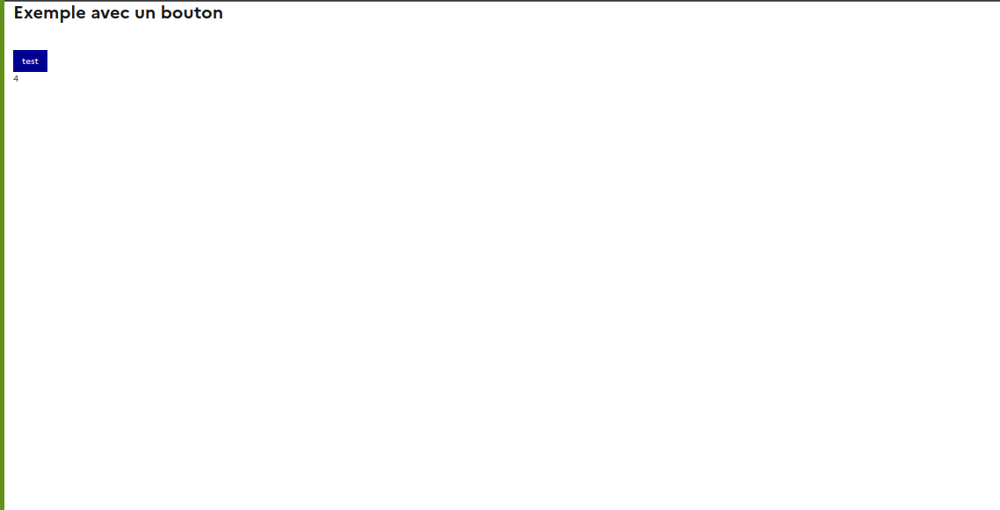

Dev-E-recommandation-pour-l-implementation-de-dsfr.Rmd
library(shinygouv)Pour ce faire, nous avons rédigé un tableau comparatif entre les éléments trouvés dans le framework DSFR et {shiny}. Il permet notamment de mettre en évidence la direction technique à employer selon deux méthodes envisagées pour utiliser DSFR dans une application {shiny}.
Utiliser les fonctionalités de {bslib} pour utiliser le framework DSFR.
Avantages :
Inconvénients:
ThinkR ne peut garantir le succès de cette méthode. Cette méthode n’a jamais été expérimentée.
On utilise seulement le package {shiny} avec des scripts au démarrage pour remplacer les classes bootstrap par les classes de DSFR. Voici une app qui le fait https://github.com/MTES-MCT/dseshiny/blob/main/dseshiny/R/dse_ui_regexp.R
Exemple pour le actionButton:
library(shiny)
addResourcePath("fonts", system.file("dsfr-v1.6.0/dist/fonts", package = "shinygouv"))
ui <- fluidPage(
includeCSS(system.file("dsfr-v1.6.0/dist/dsfr.min.css", package = "shinygouv")),
h2("Exemple avec un bouton"),
br(),
actionButton("test", "test"),
textOutput("texte")
)
remplace_bttn <- function(ui) {
res <- rapply(
ui,
function(attribut) {
gsub(
x = attribut,
pattern = "btn btn-default",
replacement = "fr-btn"
)
},
how = "replace",
classes = "character"
)
}
server <- function(input, output, session) {
output$texte <- renderText({
input$test
})
}
shinyApp(remplace_bttn(ui), server)
Avantages:
Inconvénients:
From scratch
Coder l’équivalent de la partie ‘UI’ {shiny} (ou quasiment) avec le framework DSFR. La partie ‘server’ reposera toujours sur la partie {shiny}. Un exemple : https://gitlab-forge.din.developpement-durable.gouv.fr/dreal-pdl/csd/shiny.dsfr et aussi https://github.com/ThinkR-open/w3css
Exemple de code pour actionButton :
library(shiny)
addResourcePath("fonts", system.file("dsfr-v1.6.0/dist/fonts", package = "shinygouv"))
actionButton_dsfr <- function(inputId, label) {
tags$button(
id = inputId,
class = "fr-btn",
value = 0,
label
)
}
ui <- fluidPage(
tags$head(
includeCSS(system.file("dsfr-v1.6.0/dist/dsfr.min.css", package = "shinygouv")),
tags$script(
"$(document).on('click', '.fr-btn', function(evt) {
var el = evt.target;
while (el.nodeName != 'BUTTON'){
el = el.parentNode;
}
el = $(el);
el.val( parseInt(el.val()) + 1)
el.trigger('updated');
});
var buttons = new Shiny.InputBinding();
$.extend(buttons, {
find: function(scope) {
return $(scope).find('.fr-btn')
},
getValue: function(el) {
console.log($(el))
return parseInt($(el).val())
},
setValue: function(el, value) {
// JS code to set value
},
receiveMessage: function(el, data) {
// this.setValue(el, data);
},
subscribe: function(el, callback) {
$(el).on('updated.buttons', function(e) {
callback();
});
},
unsubscribe: function(el) {
$(el).off('.buttons');
}
});
Shiny.inputBindings.register(buttons);"
)
),
actionButton_dsfr("test", "test"),
)
server <- function(input, output, session) {
observeEvent(input$test, {
message(input$test)
})
}
shinyApp(ui, server)Ceci sera transformé en fonction et documenter dans un package
Avantages :
Inconvénients:
On peut tout à fait imaginer une fonction qui parserait le code pour remplacer les appels à {shiny} avec les fonctions {DSFR}.
from scratch mais pas vraiement
On pourrait recoder les inputs en conservant les classes CSS qui permettent l’activation du backend JS (comme pour shinyWidgets).
Exemple pour le actionButton de {shinyWidgets} https://github.com/dreamRs/shinyWidgets/blob/46359eccb5cfaac80cbe2949da231e3416afcc37/R/actionBttn.R#L63
Ou pour notre actionButon :
Le fait de lui donner la classe action-button lui permet d’être reconnu par le JS de {shiny} et donc d’avoir une interaction. De même, le fait de lui donner la classe fr-btn en plus, lui permet d’être reconnu par le CSS du DSFR.
library(shiny)
addResourcePath("fonts", system.file("dsfr-v1.6.0/dist/fonts", package = "shinygouv"))
actionButton_dsfr <- function(inputId, label) {
tags$button(
id = inputId,
class = "fr-btn action-button",
value = 0,
label
)
}
ui <- fluidPage(
includeCSS(system.file("dsfr-v1.6.0/dist/dsfr.min.css", package = "shinygouv")),
actionButton_dsfr("test", "test")
)
server <- function(input, output, session) {
observeEvent(input$test, {
message(input$test)
})
}
shinyApp(ui, server)Avantages :
Néanmoins, le temps gagné sur les inputs basiques pourrait permettre d’implementer de nouveaux inputs si nécéssaire
Inconvénients :
action-button notre
code ne marchera plus (peu probable…).Les changements sont énumérés:
On peut tout à fait imaginer une fonction qui parserait le code pour remplacer les appels à {shiny} avec les fonctions {DSFR}.
Les éléments tels que navbarpage, tabpanel etc sont possible dans la limite de ce que propose DSFR. Ils nécéssitent plus ou moins une demi-journée par composant (codé avec des htmlTemplates).
Nous préconisons l’option D. Pourquoi ?
Cette aprroche permet de mettre en avant le travail réalisé sur le
framework DSFR avec une implementation possible de l’intégralité des
fonctionnalités sans la contrainte et la lourdeur de connaitre le JS.
Elle permet aussi de faciliter la maintenance du package par les futures
mainteneurs. Bien que cette option ne réponde pas directement à
l’objectif :
éviter d'avoir des fonctions spécifiques pour ne pas géner le passage d'un template à un autre,
on peut tout à fait imaginer une fonction qui parserait le code pour
remplacer les appels à {shiny} avec les fonctions {DSFR}.